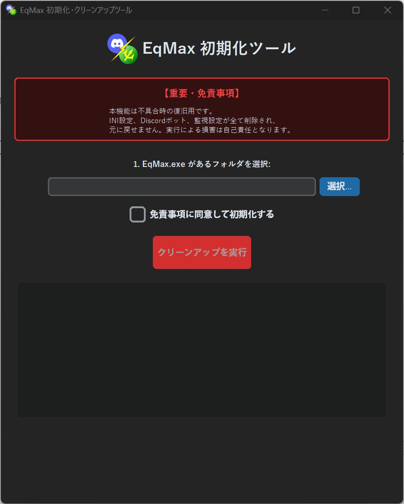
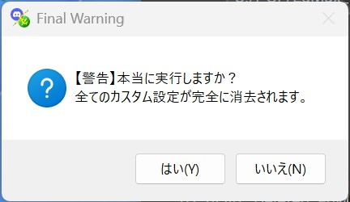

EqMaxを初期状態に戻す
起動方法

総合ハブの
EqMax初期化処理 (⑦の部分)を実行してください。初期化ツール概要


手順：
- EqMax.exeの選択: ファイルを選択します。
- 免責事項にチェック: 内容を確認し同意します。
- クリーンアップ実行: ボタンが有効化されるのでクリックします。
- 最終確認: 追加の警告が表示されるので「はい」を選択すると初期化が開始されます。
※Tips：実行時の注意点
このツールを実行すると、EqMax本体の設定だけでなく、DiscordBridgeやWatchdogの設定もすべて削除されます。
また、バックアップは自動作成されません。必要なデータがある場合は、必ず事前に手動でバックアップを行ってください。